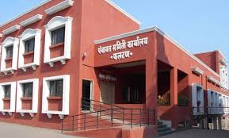

अर्थ विभाग जिल्हा परिषद हा सातारा जिल्हा परिषदेमधील एक महत्त्वाचा विभाग आहे. अर्थ विभाग जिल्हा परिषद सातारा मार्फत शासनाकडून विविध विकासकामांसाठी अनुदान प्राप्त होते. प्राप्त अनुदानातून विविध विकास कामांची देयके अदा केली जातात तसेच सेवानिवृत्त कर्मचा–यांचे सेवानिवृत्ती वेतन दरमहा अदा करण्यात येते. मुख्य लेखा व वित्त अधिकारी हे जिल्हा परिषदेचे वित्तीय सल्लागार व प्राथमिक लेखापरिक्षक या नात्याने कामकाज करतात. अंदाजपत्रक शाखा , अनुदान शाखा, संकलन शाखा, भविष्य निर्वाह निधी शाखा, परिभाषित अंशदान निवृत्ती वेतन योजना / राष्ट्रीय निवृत्ती वेतन योजना, निवृत्ती वेतन शाखा, अंतर्गत लेखा परिक्षण शाखा, गट विमा योजना शाखा , आस्थापना शाखा -1 व 2 , ठेव व तसलमात शाखा, वेतनपडताळणी शाखा, झेडपीएफएमएस प्रणाली कामकाज शाखा, रोखपाल शाखा , जिल्हा परिषद मुद्रणालय, मध्यवर्ती भांडार या शाखामधून जिल्हा परिषदेच्या अर्थ विभागाचे अर्थविषयक कामकाज चालते.
अंदाजपत्रक शाखा:
महाराष्ट्र जिल्हा परिषदा व पंचायत समिती अधिनियम १९६१ मधील कलम १३७ व १३८ नुसार जिल्हा परिषदेचे स्वनिधीचे व शासकीय विविध योजनांचे अंदाजपत्रक वित्त विभागाकडून तयार केले जाते. अर्थ समितीचे शिफारशी नंतर सदर अंदाजपत्रक मा. सभापती, अर्थ समिती, हे जिल्हा परिषद सर्वसाधारण सभेपुढे मान्यतेसाठी मांडतात. स्वनिधीचे मुळ सुधारीत अंदाजपत्रक वित्त समितीचे शिफारसीसाठी दरवर्षी २५ फेब्रुवारी पूर्वी तयार करुन सादर करणेत येते. वित्त समितीचे शिफारसीसह जिल्हा परिषदेपुढे दरवर्षी २७ मार्च पूर्वी मान्यता घेणेसाठी सादर करणे. तसेच उपलब्ध रक्कमेनुसार पुरवणी अंदाजपत्रक तयार करुन त्यास वित्त समितीच्या शिफारशीसह जिल्हा परिषदेची मान्यता घेण्यात येते जिल्हा परिषद सर्वसाधारण सभेने सुचविलेल्या दुरुस्त्या व सूचना विचारात घेवून अंदाजपत्रक अंतीम केले जाते व संबंधीत विभागांना पुढील कार्यवाहीसाठी पाठविले जाते.महाराष्ट्र शासन ग्रामविकास विभागाकडील राजपत्र असाधारण क्रमांक 26 दि. 11/03/2022 व दिनांक 13/09/2022 तसेच महाराष्ट्र जि.प. व प.स. अधिनियम 1961 मधील कलम 9 १ ब अन्वये जिल्हा परिषदांचे सर्व अधिकार माननीय प्रशासक तथा मुख्य कार्यकारी अधिकारी यांना दिलेले असलेने महाराष्ट्र जि.प. व प.स. अधिनियम 1961 मधील कलम 138 (1) नुसार जि.प.स्वनिधी सन 2024 -25 चे पुरवणी अंदाजपत्रकास ठराव समिती ठराव क्रमांक 900 दिनांक 24/07/2024 नुसार मान्यता देणेत आली आहे.
अनुदान शाखा:
शासनाकडून तसेच जिल्हा वार्षिक योजना (DPC) कार्यालयाकडुन प्राप्त होणारे वेतन व वेतनेतर अनुदानाची महाराष्ट्र कोषागार नियमामधील विविध नमुन्यामध्ये देयके तयार करुन कोषागारातून निधी आहरीत करणे. विभागाकडुन प्राप्त वित्तप्रेषण सर्व पंचायत समितींना वर्ग करणेचे कामकाज करण्यात येते. जिल्हा परिषदेकडे निधी खर्च होईपर्यत अखर्चित राहणाऱ्या रक्कमांची बँकामध्ये गुंतवणूक करुन जिल्हा परिषदेचे उत्पन्नामध्ये वाढ करणे. शासनाकडून प्राप्त रक्कमांचा महालेखापाल व आयुक्त कार्यालयासोबत ताळमेळ घेणे. वित्त् विभाग शासन निर्णय दिनांक 14/02/2024 नुसार जिल्हा परिषदेस प्राप्त होणारा वेतनेत्तर निधी आभासी वैयक्तिक ठेव लेखा (VPDA) प्रणालीवर आभासी स्वरुपात प्राप्त करुन संबंधितांची देयके अदा केली जातात.
संकलन शाखा:
महाराष्ट्र जिल्हा परिषदा व पंचायत समिती अधिनियम १९६१ मधील कलम १३६ नुसार जिल्हा परिषदेचे वार्षिक लेखे वित्त विभागामार्फत तयार केले जातात. यामध्ये मासिक लेखे दरमहा तयार करुन घेणे, एकत्रित लेखा नमुना नं. 1 ते 3 मध्ये तयार करुन जिल्हा परिषदेची अर्थ समिती व स्थायी समितीची मान्यता घेणे. जिल्हा परिषदेचे वार्षिक लेख्यास २५ ऑगस्ट पूर्वी अर्थ समिती आणि ३० सप्टेंबर पूर्वी जिल्हा परिषद सर्वसाधारण सभेची मान्यता घेणे तसेच जिल्हा परिषदेचे लेखे १५ नोव्हेंबर पूर्वी शासन राजपत्रात प्रसिद्धीसाठी शासनास सादर केले जातात.
भविष्य निर्वाह निधी शाखा:
सातारा जिल्हा परिषदे अंतर्गत 5515 शिक्षक व 1800 वर्ग 3, 4 कर्मचारी असे एकुण 7315 कर्मचाऱ्यांचे भविष्य निर्वाह निधीचे लेखे अर्थ विभागामार्फत अदयावत ठेवले जातात. त्यासाठी संगणक प्रणाली विकसित करण्यात आलेली आहे. दरवर्षी जिल्हा परिषद कर्मचारी व शिक्षक यांना भविष्य निर्वाह निधीचे वार्षिक विवरणपत्र वितरीत केले जाते. शिक्षक/शिक्षकेत्तर कर्मचारी यांचे कार्यालयाकडुन प्रस्ताव अर्थ विभागात प्राप्त झाल्यानंतर अर्थ विभागात त्याची तपासणी करुन कोषागारातुन देयक पारीत केल्यानंतर शिक्षक/शिक्षकेत्तर कर्मचारी यांनी भविष्य निर्वाह निधीमधून परतावा, ना परतावा, 90 टक्के अग्रीम व अंतिम काढलेल्या रक्कमा R T G S मार्फत संबधितांच्या खात्यावर जमा होतात. भविष्य निर्वाह निधीमधून परतावा, ना परतावा, 90 टक्के अग्रीम व अंतिम रक्कम काढणेसाठी आवश्यक असणारे सर्व नमुने जिल्हा परिषदेच्या वेबसाइटवर प्रसिध्द करण्यात आलेले आहेत.. सन 2023-24 अखेर भविष्य निर्वाह निधीचे सर्व कर्मचा-यांचे विवरणपत्र वितरीत करण्यात आले आहेत.
परिभाषित अंशदान निवृत्ती वेतन योजना / राष्ट्रीय निवृत्ती वेतन योजना:
शासन निर्णय, वित्त विभाग क्रमांक अंनियो-1005/126/सेवा-4,दि.31/10/2005 अन्वये परिभाषित अंशदान निवृत्ती वेतन योजनेची कार्यवाही केली जाते. शासन निर्णय क्रमांक :अंनियो-2015/प्र.क्र.62/वित्त-5,दि.13 जून 2017 अन्वये राज्याची परिभाषित अंशदान निवृत्तीवेतन योजना लागू असणाऱ्या जिल्हा परिषदेकडील कर्मचाऱ्यांना (शिक्षक वगळून) व शालेय शिक्षण व क्रिडा विभाग शासन निर्णय क्र.अंनियो-3415/प्र.क्र.276/टिएनटी6 दिनांक 19/09/2019 अन्वये (शिक्षक) राष्ट्रीय निवृत्तीवेतन योजना (स्तर-1) लागू करावयाची कार्यवाही केली जाते. सातारा जिल्हा परिषदे अंतर्गत 2175 (शिक्षकेत्तर) कर्मचारी यांच्या राष्ट्रीय निवृत्तीवेतन योजना अंतर्गत लेखे अर्थ विभागामार्फत अदयावत ठेवले जातात. दरमहा त्यांचे वेतनातील मासिक वर्गणी प्राण खाती वर्ग करण्यात येते.सातारा जिल्हा परिषदे अंतर्गत 1969 शिक्षक कर्मचाऱ्यांना राष्ट्रीय निवृत्तीवेतन योजना अंतर्गत प्राण क्रमांक देणेत आले असुन दरमहा त्यांचे वेतनातील मासिक वर्गणी प्राण खाती वर्ग करण्यात येते.सातारा जिल्हा परिषदेकडील कार्यरत असणाऱ्या कर्मचाऱ्यांची शासनाकडून प्राप्त लिगसी रक्कम त्यांचे प्राण खाती वर्ग करण्यात आली आहे.
निवृत्ती वेतन शाखा:
जिल्हा परिषद सेवेतून सेवानिवृत्त होणाऱ्या शिक्षक आणि शिक्षकेतर कर्मचारी यांना सेवा निवृत्तीवेतन तसेच सेवानिवृत्तीनंतरचे इतर लाभ विनाविलंब मंजूर करण्याची कार्यवाही केली जाते. यामध्ये संबंधीत विभागाकडून परिपूर्ण प्रस्ताव प्राप्त होणे आवश्यक असते. सातारा जिल्हा परिषद सेवेतून सेवा निवृत्त होणारे शिक्षक कर्मचारी 8553 व शिक्षकेत्तर कर्मचारी 3774 असे एकुण 12327 निवृत्ती वेतन धारक असून त्यांना दरमहा निवृत्त वेतन पंचायत समिती मार्फत आदा केले जाते. तसेच उपदान व अंशराशीकरण अनुदान उपलब्धतेनुसार अदा केले जाते. नव्याने सेवानिवृत्त होणाऱ्या अधिकारी/कर्मचारी यांना त्यांचे सेवानिवृत्ती दिनांकास आनंदी सेवानिवृत्ती योजनेअतंर्गत कार्यक्रम घेवून सेवानिवृत्तीचे आदेश (पी.पी.ओ.) देण्यात येतात. वित्त विभागाकडील शासन निर्णय दिनांक 23/11/2023 नुसार नविन निवृत्तीवेतन प्रणाली विकासित करणेबाबत सातारा जिल्हा परिषदची पायलेट जिल्हा म्हणून निवड झालेली आहे.
अंतर्गत लेखा परिक्षण शाखा:
जिल्हा परिषदेकडील विविध विभाग व सर्व पंचायत समित्या व त्या अंतर्गत येणारी सर्व कार्यालये यांचे दरवर्षी अंतर्गत लेखा परिक्षण पथकाची नेमणूक करुन अंतर्गत लेखापरिक्षण करण्यात येते. लेखा परिक्षणात आढळणा-या त्रुटींची पुर्तता करुन घेणे. स्थानिक निधी लेखा, महालेखापाल व पंचायत राज समिती यांचेकडून घेण्यांत आलेल्या शकांची पुर्तता करणेस मदत करणे व समन्वय ठेवणे.
गट विमा योजना शाखा:
जिल्हा परिषदेकडील सर्व संवर्गातील वर्ग – ३ व वर्ग – ४ कर्मचा-यांचे सेवानिवृत्ती नंतरचे गट विम्याचे प्रस्ताव संबंधीत कार्यालयाकडून प्राप्त झालेनंतर प्रस्तावाची छानणी करुन सदर गट विमा देयके नमुना नं. आठ मध्ये कोषागारात सादर केली जातात, व कोषागारामार्फत ई-कुबेर प्रणालीद्वारे संबधितांच्या खात्यावर थेट जमा होतात.
आस्थापना शाखा -1 व 2:
आस्थापना शाखेमार्फत लेखा संवर्गातील कर्मचाऱ्यांचे आस्थापना विषयक कामकाज केले जाते. उदा. सरळ सेवा नेमणूका, नियमित पदोन्नत्या, कालबद्ध पदोन्नत्या, बदल्या, जेष्ठता याद्या, गोपनीय अभिलेख, सेवा निवृत्ती प्रकरणे तयार करणे, कर्मचाऱ्यांचे वेतन भत्ते, प्रवास भत्ते देयके तयार करणे ,कार्यालयीन कर्मचारी यांचे सेवापुस्तके अद्यावत करणे तसेच लेखा परीक्षा विषयक कामकाज केले जाते.
ठेव व तसलमात शाखा:
जिल्हा परिषदेकडील विविध विकासकामे करणारे मक्तेदार यांचेकडून प्राप्त होणारी बयाणा रक्कम तसेच सुरक्षा ठेवींचा हिशोब ठेवला जातो. जमा ठेवी रक्कमा ठेव नोंदवही नमुना नंबर ७१ मध्ये नोदी घेणे मक्तेदार यांचे मागणीनुसार आणि खात्याने नमुना नंबर ८३ मध्ये ठेव परताव्याची देयके सादर केलेनंतर देयके पारित करणे तसेच तीन वर्षावरील सुरक्षा ठेवी व्यपगत करुन जिल्हा निधीत जमा करणे तसेच स्थायी समितीचे मान्यतेनुसार सदर व्यपगत ठेवी परतावा करणे. जिल्हा परिषद कर्मचाऱ्यांना घरबांधणी, मोटारसायकल खरेदीसाठी तसलमात देणे कर्ज हप्त्यांच्या नोंदी तसलमात नोंदवही नमुना नंबर ७९ मध्ये ठेवणे त्याचप्रमाणे खाते तसलमात रक्कमांचा हिशोब ठेवण्याचे काम या शाखेमार्फत केले जाते.
वेतनपडताळणी:
म.ना.से (निवृतीवेतन) नियम 1982 मधील नियम 121 ते 126 नुसार सेवानिवृत होणाऱ्या कर्मचाऱ्यांच्या निवृत्तीपूर्वी करावयाच्या कार्यवाहीबाबत स्पष्ट नियम करण्यात आले आहेत.त्या अनुषंगाने अधिकारी/कर्मचारी यांचे सेवापुस्तक वेतनपडताळणी करुन घेणे आवश्यक असते. सातारा जिल्हा परिषद अंतर्गत येणाऱ्या ज्या कर्मचारी यांची नियुक्ती मा. मुख्य कार्यकारी अधिकारी,सातारा जिल्हा परिषद,सातारा(नियुक्ती प्राधिकरण ) यांच्या आदेशानुसार होत असते त्या सर्व कर्मचारी यांची सेवाविषयक पडताळणी वेतनपडताळणी शाखा अर्थ विभाग जिल्हा परिषद सातारा यांच्यामार्फत करण्यात येते. तसेच दर दहा वर्षानी वेतन आयोग लागू झाल्यावर सर्व कर्मचा-यांची वेतन पडताळणी करणयात येते. सातारा जिल्हा परिषद अंर्तगत एकुण शिक्षकेत्तर 25 संवर्ग (लेखा विभाग,सामान्य प्रशासन विभाग,ग्रामपंचायत विभाग,आरोग्य विभाग, कृषी विभाग, बांधकाम विभाग इत्यादी ) व शिक्षण विभागाकडील एकुण 4 संवर्ग आहेत. त्या सर्व संवर्गाची वेतनपडताळणी अर्थ विभाग वेतनपडताळणी शाखा मार्फत केली जाते. तसेच दरवर्षी वित्त विभाग जिल्हा परिषद सातारा कडुन तालुकास्तरावर वेतन पडताळणी करणेसाठी विशेष मोहिम राबवून वेतन पडताळणीचे कामकाज तात्काळ केले जाते.
झेडपीएफएमएस प्रणाली :
ग्रामविकास विभाग , मंत्रालय मुंबई यांचेकडील शासन निर्णय क्र.आयटी2016/ प्र.क्र.59/ मातंक, दि.14/10/2020 अन्वये केंद्र व राज्य शासनाच्या धोरणानुसार जिल्हा परिषद स्तरावरील निधीचे वितरण व संनियंत्रण करण्यासाठी सर्व जिल्हा परिषदांमध्ये एकसूत्रता रहावी यासाठी बँक ऑफ महाराष्ट्र या राष्ट्रियकृत बँकेने विकसित केलेल्या जिल्हा परिषद फंड मॉनिटरिंग सिस्टीम या प्रणालीचा वापर करणेबाबत कळविलेले आहे. सदर प्रणालीच्या माध्यमातून शासनास अभिप्रेत असलेले एकात्मिक वित्तीय व्यवस्था, योजनेचे व्यवस्थापन आणि देयक प्रणाली सर्व जिल्हा परिषदांमध्ये राबविण्यात येऊन त्यामध्ये एकसूत्रता राहणार आहे. तरी सन 2021-22 या वित्तीय वर्षापासून सातारा जिल्हा परिषद व अंतर्गत असणारी सर्व कार्यालय तसेच तालुका स्तरावरील सर्व उपविभाग यांचे वित्तीय कामकाज ZPFMS या प्रणालीव्दारे सुरु करण्यात आलेले आहे.
जिल्हा परिषद मुद्रणालय:
सातारा जिल्हा परिषदेने १९८३ साली स्वतःचे मालकीचे मुद्रणालय सुरु केले आहे. मा.सभापती अर्थ समिती व मा.मुख्य कार्यकारी अधिकारी यांचे मार्गदर्शनाखाली मुख्य लेखा व वित्त अधिकारी हे मुद्रणालयाचे प्रमुख नियंत्रक म्हणून काम पाहतात. जिल्हा परिषदेने ठरवून दिलेल्या नियमावलीप्रमाणे मुद्रणालयाचे कामकाज ना नफा ना तोटा तत्वावर चालते. महाराष्ट्र शासनाच्या ग्राम विकास विभागाने दिनांक-३० ऑक्टोंबर १९८५ रोजी निर्गमित केलेल्या शासन निर्णय क्र.१०८५/४१ (सी.आर.)१५५४/२६ नुसार महाराष्ट्र राज्यातील सर्व जिल्हा परिषदा व अन्य शासकीय कार्यालयांना छपाई कामासाठी निविदा न मागविता जिल्हा परिषद मुद्रणालयाकडून थेट छपाई कामाची मागणी नोंदवून छपाई करुन घेता येते.जिल्हा परिषदांचे लेखासंहितेप्रमाणे लागणारी रजिष्टर व फॉर्मस् छापून योग्य किमतीत पुरवली जातात. जिल्हा परिषदांच्या दैनंदिनी देखील मागणी प्रमाणे योग्य किंमतीत छपाई करुन दिल्या जातात. तसेच शासनाने विविध विभागाचे मागणी प्रमाणे छपाई करुन दिली जाते.
मध्यवर्ती भांडार:
महाराष्ट्र शासन ग्रामविकास विभागाकडील शासन निर्णय क्रमांक झेडपीए-2016/प्र.क्र.15/वित्त-9 दिनांक 09/08/2016 नुसार जिल्हा परिषदेमधील महाराष्ट वित्त व लेखा संवर्गातील अधिका-यांच्या कामकाजाच्या विभागणीबाबत शासन निर्णय निर्गमित करण्यात आहे. त्यामधील पदाचे कर्तव्य क्रमांक 11 नुसार जिल्हा परिषदेच्या मध्यवर्ती भंडार पूर्ण नियंत्रण मुख्य लेखा व वित्त अधिकारी यांचेकडे असलेबाबत नमूद केले आहे. तसेच उद्योग, ऊर्जा व कामगार विभाग, शासन निर्णय क्रमांक: भांडार-2014/प्र.क्र.82/भाग-III/उद्योग-4 दिनांक 01/12/2016 नुसार ज्या वस्तू दोन किंवा अधिक विभागाला खरेदी करणे आवश्यक असेल त्यासाठी संबंधित विभागांनी मध्यवती भांडार शाखेकडे मागणी केल्यानंतर जिल्हा परिषदेची मान्यता घेवून मध्यवर्ती भांडार शाखेकडून एकत्रित खरेदी करण्यात येते. खरेदी करण्यात आलेल्या वस्तूचा पुरवठा अर्थ विभागामार्फत जिल्हा परिषदेकडील सर्व विभाग व पंचायत समित्या व त्यांचे अधिनस्त सर्व कार्यालये/विभाग यांना करण्यात येतो.
रोखपाल शाखा:
जिल्हा परिषदेस प्राप्त होणाऱ्या सर्व प्रकारच्या अनुदानांची व जिल्हा परिषद मार्फत केल्या जाणाऱ्या सर्व प्रकारच्या प्रदानांची नोंद दिनांक निहाय सबंधित रोजकिर्दीमध्ये करणे, तसेच सर्व रोजकिर्दींचा संबधीत बँकेसोबत ताळमेळ घेवून दैनिक, मासिक व वार्षिक गोषवारा काढणे.